Contexto histórico
Auschwitz-Birkenau fue el mayor complejo de campos de concentración y exterminio establecido por la Alemania nazi. Operativo desde 1940 hasta enero de 1945, este lugar se convirtió en el centro del sistema de asesinato masivo durante el Holocausto. Más de 1,3 millones de personas fueron deportadas a este complejo; al menos 1,1 millones fueron asesinadas, de las cuales aproximadamente el 90% eran judíos.
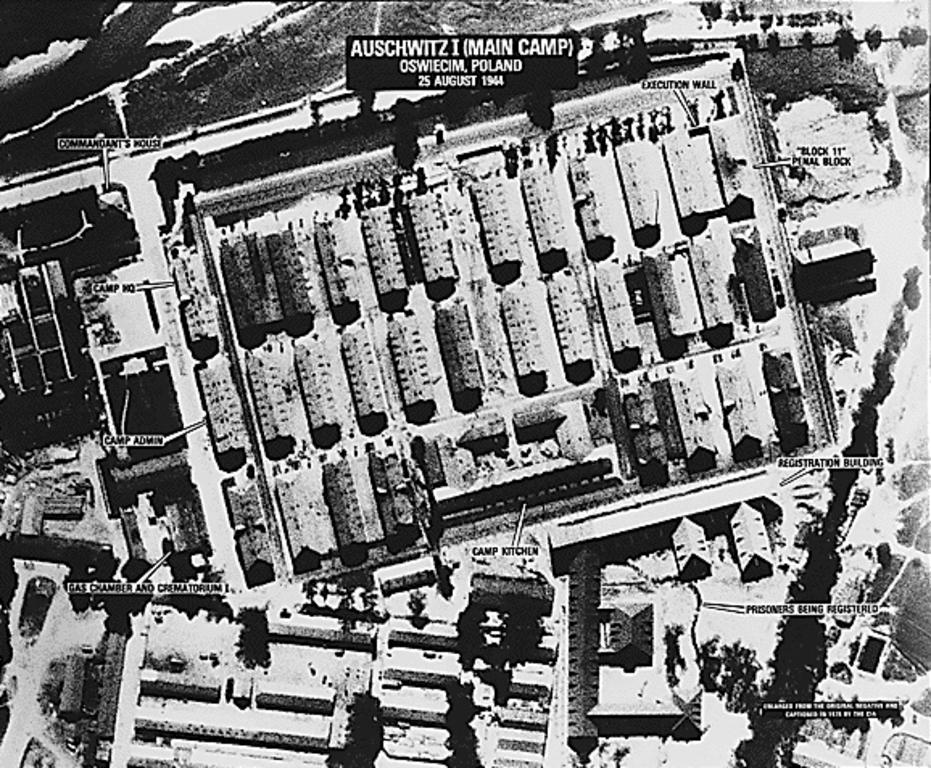
El complejo estaba compuesto por tres campos principales:
- Auschwitz I (campo principal) – establecido en 1940, funcionaba como centro administrativo.
- Auschwitz II–Birkenau – construido en 1941, era el mayor campo de exterminio del complejo, donde ocurrió la mayoría de los asesinatos.
- Auschwitz III–Monowitz – campo de trabajo forzado para la fábrica Buna de la empresa IG Farben.
En 1979, la UNESCO declaró Auschwitz-Birkenau Patrimonio de la Humanidad, reconociendo su importancia histórica y su valor como símbolo y advertencia para las generaciones futuras.
Propósito de esta guía
Esta guía educativa ha sido diseñada para ayudar a los visitantes a comprender el significado histórico y la relevancia contemporánea del Memorial y Museo Estatal de Auschwitz-Birkenau. La visita a este lugar es una experiencia profundamente conmovedora que requiere respeto, reflexión y contextualización adecuada.
Nuestros objetivos son:
- Proporcionar información histórica precisa sobre el Holocausto y el complejo de Auschwitz-Birkenau.
- Honrar la memoria de todas las víctimas, preservando sus historias y testimonios.
- Promover la reflexión sobre las causas y consecuencias del odio, el prejuicio y la indiferencia.
- Fomentar un compromiso con los valores de dignidad humana, respeto y responsabilidad cívica.
Auschwitz I
Puerta «Arbeit macht frei»
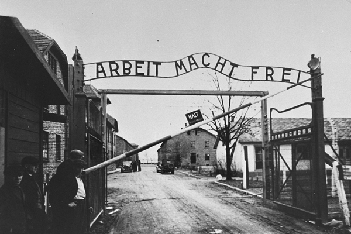
Orígenes y simbolismo: Este infame letrero fue colocado en junio de 1940. La frase, que significa "El trabajo os hará libres", representaba una cruel ironía, pues para la inmensa mayoría de deportados no habría liberación posible. El letrero formaba parte del sistema de engaño y manipulación psicológica empleado por los nazis.
El acto de resistencia: Jan Liwacz, prisionero político polaco con el número 1010, contribuyó a la fabricación del letrero e invirtió deliberadamente la letra "B" como un acto sutil de resistencia y sabotaje. Este pequeño gesto de rebeldía representa la resistencia espiritual de los prisioneros ante la deshumanización.
La rutina del campo: Cada día, miles de prisioneros pasaban bajo este arco hacia el trabajo forzado, acompañados por la orquesta de prisioneros que tocaba marchas. Esta música formaba parte del sistema de control psicológico, creando una falsa sensación de normalidad en medio del horror.
Bloque 4 – «Exterminio»
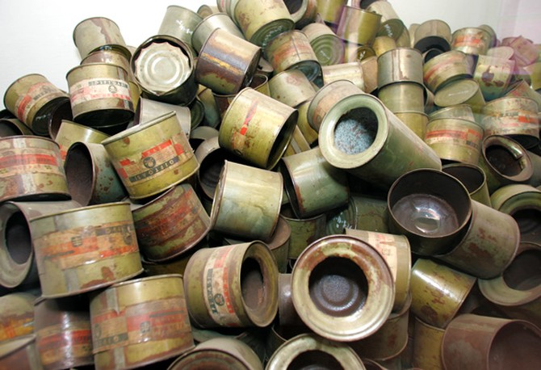
Transformación genocida: Esta exposición documenta la evolución de Auschwitz desde un campo de concentración a un centro de exterminio masivo. A través de mapas, documentos y objetos originales, se muestra cómo el régimen nazi desarrolló métodos cada vez más eficientes para el asesinato en masa.
En septiembre de 1941 se realizaron las primeras pruebas con gas Zyklon B, utilizando prisioneros soviéticos como víctimas. Posteriormente, este método se industrializó con la construcción de grandes cámaras de gas en Birkenau, donde podían asesinarse hasta 2.000 personas simultáneamente.
La exposición incluye latas originales de Zyklon B, maquetas de los crematorios y documentación estadística que ilustra la magnitud del genocidio: más de un millón de judíos, 70.000-75.000 polacos no judíos, 21.000 romaníes, 15.000 prisioneros soviéticos y 10.000-15.000 personas de otras nacionalidades.
Bloque 5 – «Pertenencias»
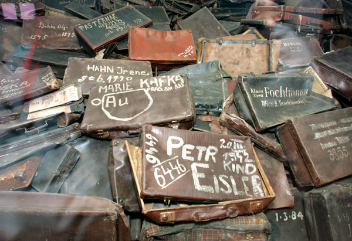
Almacenes "Kanada": Los prisioneros llamaban "Kanada" a los almacenes donde se clasificaban y guardaban los objetos robados a los deportados, un nombre que hacía referencia a Canadá como símbolo de riqueza. Este área contenía todo lo que las víctimas habían traído consigo: ropa, maletas, zapatos, gafas, prótesis, cepillos, juguetes y otros enseres personales.
La exposición actual muestra una fracción de lo que se encontró tras la liberación, ya que la mayor parte fue enviada a Alemania durante el funcionamiento del campo. Estos objetos personales ilustran la magnitud del robo sistemático y la deshumanización de las víctimas.
Las maletas y la identidad: Particularmente conmovedoras son las maletas marcadas con nombres, fechas de nacimiento y direcciones. Estas etiquetas han permitido a investigadores y genealogistas rastrear historias individuales de víctimas que de otro modo habrían quedado en el anonimato.
El cabello humano: Una de las vitrinas más impactantes contiene aproximadamente 2 toneladas de cabello humano (de las 7 toneladas encontradas tras la liberación). Este cabello era cortado a las víctimas, principalmente mujeres, y enviado a Alemania para fabricar textiles industriales, un ejemplo más de la explotación total a la que fueron sometidas las víctimas.
Bloque 6 – Registro y vida cotidiana
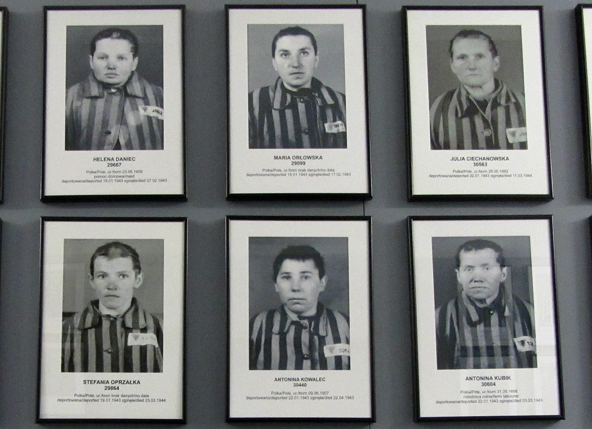
Proceso de registro: Este bloque muestra cómo los prisioneros eran despojados de su identidad individual al llegar al campo. El proceso incluía el rapado del cabello, la desinfección, la entrega de uniformes a rayas y el tatuaje de un número de identificación para quienes no serían asesinados inmediatamente.
La galería fotográfica: Una de las salas más impactantes contiene fotografías de identificación de prisioneros. Entre 1940 y 1943, se fotografiaba a los prisioneros al llegar (excepto a los judíos enviados directamente a las cámaras de gas). Estas imágenes muestran rostros aún no marcados por el hambre y el maltrato, preservando un último vestigio de humanidad.
Wilhelm Brasse, prisionero número 3444, fue obligado a trabajar como fotógrafo del campo. Realizó aproximadamente 40.000-50.000 retratos de identificación. Arriesgando su vida, logró salvar muchos negativos al final de la guerra, proporcionando un valioso testimonio visual.
Sistema de clasificación: La exposición explica el sistema de triángulos de colores que identificaba las categorías de prisioneros: rojo para presos políticos, verde para criminales, negro para "antisociales", rosa para homosexuales, púrpura para Testigos de Jehová, y una estrella amarilla combinada con otro triángulo para los judíos.
Niños en Auschwitz: Una sección especial documenta el destino de los aproximadamente 232.000 niños deportados al campo, de los cuales solo unos 650 sobrevivieron hasta la liberación. La mayoría de los niños judíos eran enviados directamente a las cámaras de gas; los que sobrevivieron a la selección inicial sufrieron condiciones inhumanas y muchos fueron sometidos a experimentos médicos.
Bloque 7 – Alojamiento
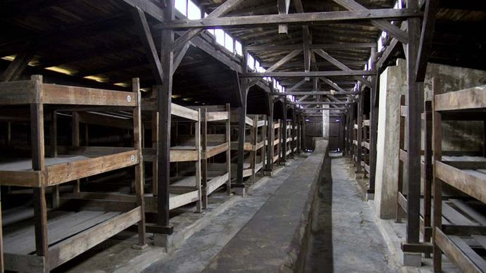
Condiciones de vida: El Bloque 7 ha sido reconstruido para mostrar las condiciones de vida de los prisioneros. Originalmente diseñado para albergar a unas 250 personas, en los peores períodos llegó a contener hasta 700 prisioneros hacinados en literas de madera de tres niveles.
Los prisioneros dormían sobre paja húmeda, frecuentemente infestada de piojos y otros parásitos. Las mantas eran escasas o inexistentes, incluso durante los duros inviernos polacos. La falta de higiene, el hacinamiento y la desnutrición contribuyeron a la rápida propagación de enfermedades.
Nutrición insuficiente: La dieta diaria consistía en aproximadamente 300 gramos de pan, una sopa aguada y ocasionalmente un poco de margarina, mermelada o embutido. Este régimen alimenticio, de unas 1.300-1.700 calorías diarias, era gravemente insuficiente para personas sometidas a trabajo físico intenso, llevando a una desnutrición severa y enfermedades relacionadas.
Epidemias: Las pésimas condiciones higiénicas provocaron brotes recurrentes de tifus y otras enfermedades infecciosas. En 1942, las epidemias de tifus causaron miles de muertes. Las SS temían el contagio, lo que ocasionalmente resultaba en la suspensión de transportes o incluso en la "selección" de enfermos para ser asesinados.
Bloque 11 – "Bloque de la muerte"
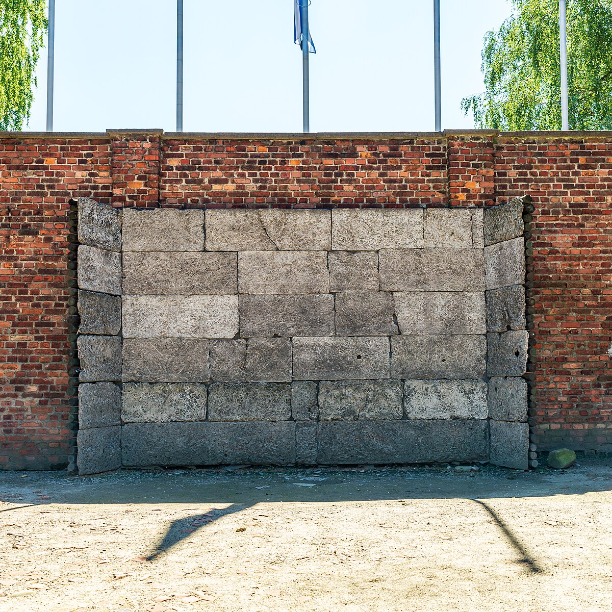
Centro de castigo: El Bloque 11 servía como prisión dentro del campo, donde se aplicaban castigos especiales y se mantenía a los prisioneros acusados de intentos de fuga, resistencia o contacto con el exterior. Además de celdas regulares, contenía varios tipos de celdas de castigo diseñadas para infligir sufrimiento extremo.
Celdas especiales: Entre estas se encontraban las "celdas de pie" (Stehzellen), espacios de 90×90 centímetros donde hasta cuatro prisioneros debían permanecer de pie toda la noche, después de una jornada de trabajo. También existían "celdas de hambre" donde los prisioneros eran abandonados sin comida ni agua hasta su muerte.
Primeros experimentos con Zyklon B: En el sótano del Bloque 11 se llevaron a cabo, en septiembre de 1941, los primeros experimentos de asesinato masivo usando gas Zyklon B. Aproximadamente 600 prisioneros soviéticos y 250 polacos enfermos fueron las primeras víctimas de este método que luego se ampliaría para el exterminio industrial.
El "Muro Negro": Entre los Bloques 10 y 11 se encuentra el "Muro Negro" (Schwarze Wand), donde se realizaban ejecuciones por fusilamiento. Miles de prisioneros, principalmente polacos, fueron asesinados contra este muro. Para amortiguar el sonido de los disparos, el muro estaba cubierto con material especial y se usaba música alta para encubrir los ruidos.
Maximilian Kolbe: En este bloque ocurrió el martirio del sacerdote polaco Maximilian Kolbe, quien se ofreció a morir en lugar de Franciszek Gajowniczek, un padre de familia seleccionado para morir de hambre como castigo tras la fuga de otro prisionero. Kolbe fue canonizado en 1982 por el Papa Juan Pablo II.
Enfermería y experimentos médicos
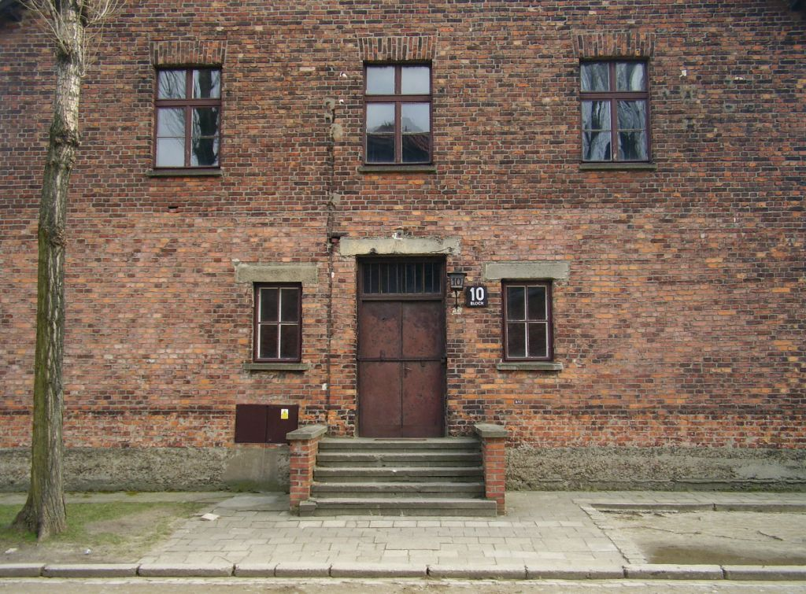
Perversión de la medicina: En Auschwitz, los principios éticos fundamentales de la medicina fueron completamente subvertidos. Los médicos, en lugar de curar, participaban activamente en la selección de víctimas para las cámaras de gas y realizaban experimentos pseudo-científicos sin consentimiento en prisioneros indefensos.
El Bloque 10: Este bloque albergaba laboratorios donde médicos como Carl Clauberg y Horst Schumann realizaban experimentos de esterilización en mujeres, principalmente judías. Clauberg inyectaba sustancias químicas en los órganos reproductivos femeninos, causando inflamaciones severas, dolor extremo y a menudo la muerte. El objetivo era desarrollar métodos eficientes para esterilizar poblaciones enteras consideradas "racialmente indeseables".
Josef Mengele: Conocido como el "Ángel de la Muerte", Mengele realizaba experimentos particularmente crueles en gemelos, enanos y personas con anomalías físicas. Estaba obsesionado con las investigaciones genéticas y la herencia racial. Sus experimentos incluían inyecciones de sustancias tóxicas, transfusiones de sangre entre gemelos, cirugías sin anestesia y disecciones de víctimas vivas.
Resistencia médica: A pesar del terror, algunos médicos prisioneros, como Gisella Perl, una ginecóloga judía húngara, arriesgaron sus vidas para ayudar a otros prisioneros. Perl realizaba abortos secretos a mujeres embarazadas, sabiendo que las mujeres embarazadas eran enviadas inmediatamente a las cámaras de gas o sometidas a experimentos brutales.
Plaza de formación
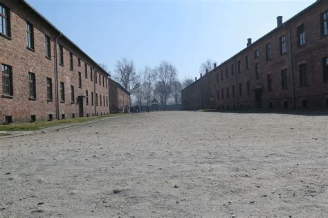
Los recuentos diarios: En la plaza central de Auschwitz I se realizaban los "Appell" o recuentos, dos veces al día, independientemente de las condiciones climáticas. Todos los prisioneros debían formarse por bloques y permanecer en posición de firmes mientras los oficiales SS contaban varias veces para asegurarse de que nadie había escapado.
Estos recuentos podían durar horas, especialmente si las cifras no coincidían o si se sospechaba de alguna fuga. En julio de 1943, tras una fuga, se realizó un recuento que duró 19 horas continuas, durante el cual al menos 12 prisioneros murieron de agotamiento o hipotermia.
Castigos públicos: La plaza de formación también servía como escenario para castigos ejemplares. Las ejecuciones por ahorcamiento se realizaban frecuentemente ante todos los prisioneros como advertencia. Los prisioneros estaban obligados a presenciar estos actos, diseñados para romper la moral y disuadir actos de resistencia.
Actos de resistencia: A pesar del terror, la plaza de formación también fue escenario de pequeños actos de resistencia moral. En algunas ocasiones, durante las ejecuciones, prisioneros susurraban oraciones o cantaban discretamente, arriesgándose a severos castigos para mantener su dignidad y humanidad frente a la brutalidad nazi.
Crematorio I
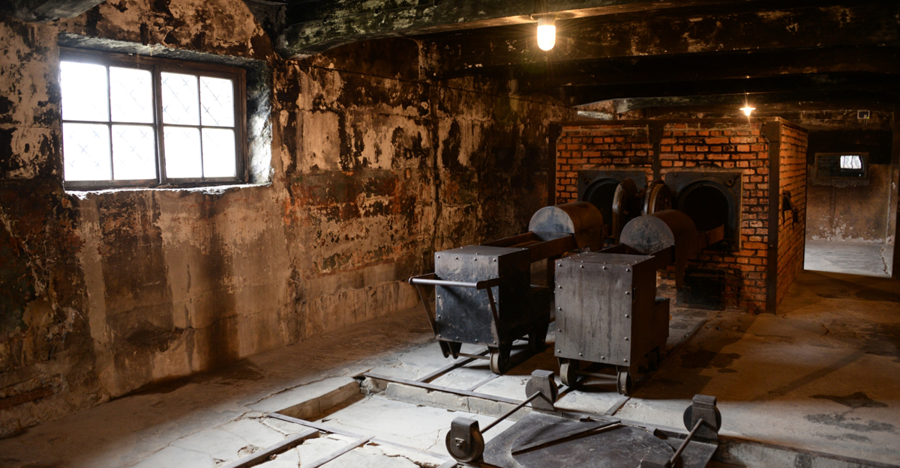
Primer crematorio y cámara de gas: El Crematorio I de Auschwitz I fue el primer sitio donde se combinaron una cámara de gas y hornos crematorios. Originalmente construido como morgue del campo, fue adaptado en 1941 para convertirse en instrumento de asesinato masivo tras los primeros experimentos con Zyklon B en el Bloque 11.
Capacidad y operación: La cámara de gas del Crematorio I podía contener aproximadamente 700 personas a la vez, y los tres hornos crematorios instalados por la empresa Topf & Söhne tenían capacidad para incinerar unos 340 cuerpos diariamente. Este crematorio funcionó principalmente hasta 1943, cuando la operación de exterminio se trasladó principalmente a las instalaciones más grandes de Birkenau.
Reconversión y reconstrucción: En 1943, el crematorio fue convertido en refugio antiaéreo para las SS, lo que implicó la división de la cámara de gas en varias habitaciones más pequeñas. Los hornos fueron desmontados. Tras la liberación, en 1947, el sitio fue parcialmente reconstruido como memorial para ilustrar la función que cumplió durante el Holocausto.
La reconstrucción actual muestra la distribución aproximada de la cámara de gas y los hornos crematorios, con el objetivo de permitir a los visitantes comprender cómo funcionaba el proceso de exterminio. Se han preservado detalles como las marcas en las paredes y las aberturas en el techo por donde se introducía el Zyklon B.
Auschwitz II – Birkenau
Puerta principal «Puerta de la Muerte»
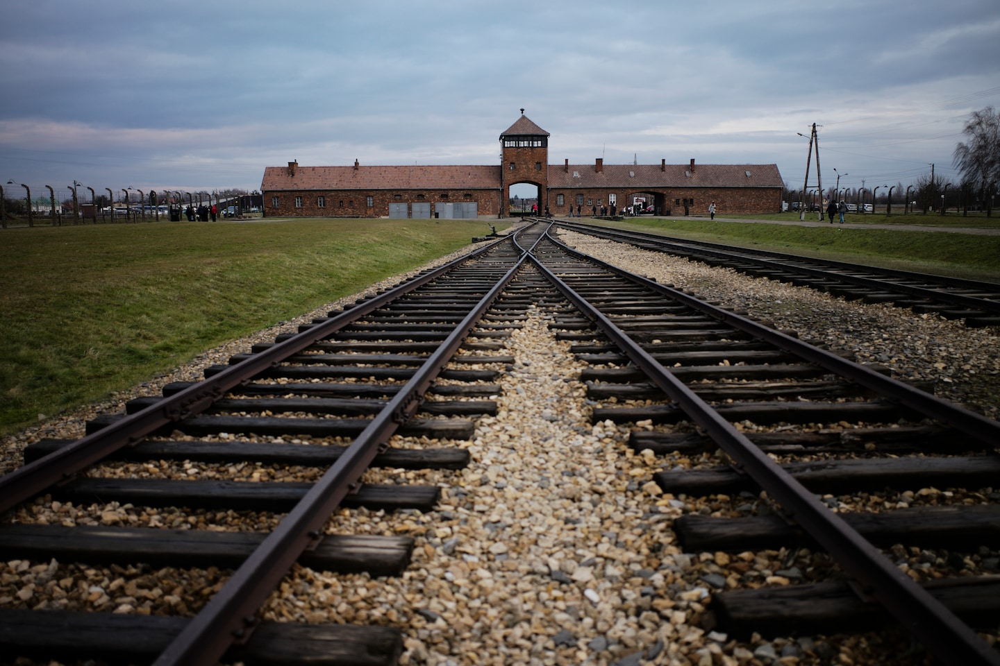
Símbolo del exterminio: La entrada principal de Birkenau, con su característica torre de vigilancia y el arco por donde pasaban las vías del tren, se ha convertido en un símbolo reconocido internacionalmente del Holocausto. A diferencia de la entrada de Auschwitz I, aquí no hay un lema engañoso, solo la brutal funcionalidad de una estructura diseñada para facilitar el transporte de víctimas hacia su muerte.
Las vías férreas: En 1944, para aumentar la eficiencia del exterminio, las vías férreas fueron extendidas para permitir que los trenes entraran directamente al interior del campo, llegando hasta un punto cercano a los crematorios. Esto eliminaba la necesidad de transportar a las víctimas desde la estación de Oświęcim, acelerando el proceso de selección y asesinato.
El Holocausto húngaro: Durante la primavera y verano de 1944, estas vías fueron testigo de uno de los episodios más intensos del Holocausto: la deportación y asesinato de aproximadamente 437.000 judíos húngaros en apenas 56 días. Los trenes llegaban continuamente, y la mayoría de deportados eran enviados directamente a las cámaras de gas.
La última fase: Entre mayo y julio de 1944, las deportaciones alcanzaron su máxima intensidad. En algunos días llegaban hasta tres trenes, cada uno con 3.000-5.000 personas. Las cámaras de gas y crematorios funcionaban las 24 horas, y cuando se superaba su capacidad, se utilizaban fosas de incineración al aire libre.
Rampa de selección
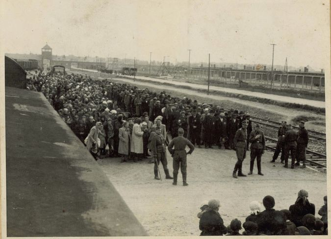
El proceso de selección: Tras descender de los trenes, exhaustos después de días de viaje en condiciones inhumanas, los deportados eran sometidos a una selección inmediata. Médicos de las SS, como Josef Mengele, decidían en segundos quién viviría momentáneamente y quién moriría de inmediato. Un simple gesto hacia la derecha o la izquierda determinaba el destino.
Aproximadamente el 75-80% de los deportados (ancianos, niños, mujeres con niños pequeños, enfermos y débiles) eran enviados directamente a las cámaras de gas sin ser registrados en el campo, lo que explica por qué nunca se conocerá el número exacto de víctimas.
El engaño organizado: Para evitar el pánico y la resistencia, las SS mantenían la ilusión de reasentamiento. Se decía a las víctimas que iban a ducharse tras el largo viaje y que sus pertenencias les serían devueltas. Las cámaras de gas estaban camufladas como instalaciones de duchas, con tuberías falsas y cabezales de ducha sin conexión de agua.
Los seleccionados para trabajar: Quienes eran considerados aptos para el trabajo forzado pasaban por el proceso de registro: les rapaban la cabeza, los desinfectaban, los tatuaban con un número y les daban uniforme de rayas. La expectativa de vida para estos prisioneros rara vez superaba los pocos meses debido al trabajo extenuante, la desnutrición y las enfermedades.
Ruinas de los Crematorios II-III
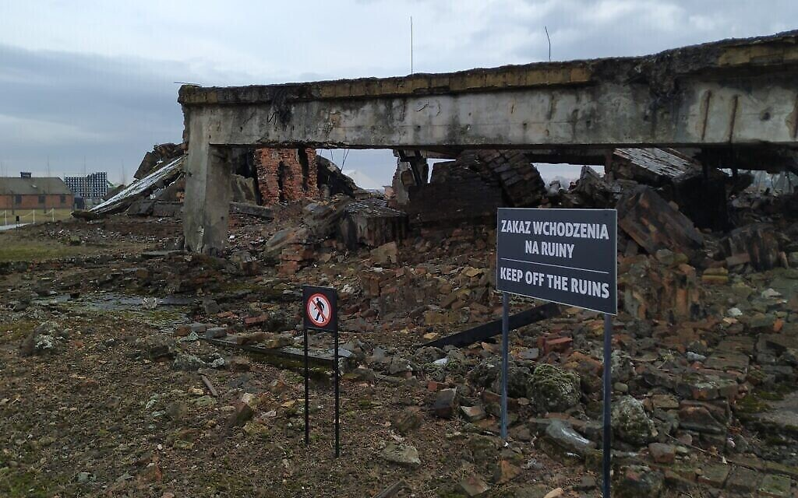
Centros de exterminio industrial: Los Crematorios II y III de Birkenau, construidos en 1943, representaban el punto culminante de la industrialización nazi del asesinato masivo. Cada instalación contaba con un vestuario subterráneo donde las víctimas se desvestían, una cámara de gas con capacidad para 2.000 personas, y una sala de cremación con cinco hornos triples que podían incinerar hasta 1.440 cuerpos en 24 horas.
Operación y proceso: Las víctimas seleccionadas para morir eran conducidas al vestuario, donde se les ordenaba desnudarse con el pretexto de una ducha de desinfección. Luego eran llevadas a la cámara de gas, que se sellaba herméticamente. Personal de las SS introducía los cristales de Zyklon B a través de aberturas en el techo, y la muerte por asfixia ocurría en aproximadamente 20 minutos de agonía.
Después, miembros del Sonderkommando (prisioneros forzados a trabajar en las cámaras de gas y crematorios) retiraban los cuerpos, les extraían objetos de valor como dientes de oro, y los transportaban a los hornos crematorios. Las cenizas eran arrojadas a estanques cercanos o utilizadas como fertilizante.
Destrucción de evidencias: En enero de 1945, ante el avance del Ejército Rojo, los nazis dinamitaron estos crematorios para intentar ocultar las evidencias de sus crímenes. Sin embargo, las ruinas que permanecen, con sus fragmentos de hormigón, ladrillos y estructuras metálicas deformadas, constituyen una prueba física irrefutable del genocidio.
La rebelión del Sonderkommando: El 7 de octubre de 1944, prisioneros del Sonderkommando del Crematorio IV organizaron una rebelión desesperada. Sabiendo que serían asesinados como testigos, lograron hacer explotar parte del crematorio con explosivos introducidos clandestinamente por mujeres que trabajaban en fábricas cercanas. Aunque casi todos los involucrados fueron ejecutados, esta rebelión representa uno de los actos más significativos de resistencia en Auschwitz.
Barracones
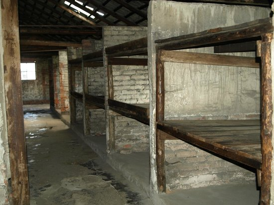
Condiciones de vida extremas: Los barracones de Birkenau representaban un nivel de degradación aún mayor que los de Auschwitz I. Existían dos tipos principales: los de ladrillo y los de madera (prefabricados, originalmente diseñados como establos para 52 caballos). En cada barracón, diseñado para albergar a 400-700 personas, se hacinaban hasta 1.000 prisioneros.
Las "camas" eran literas de tres niveles donde dormían de 5 a 7 personas por nivel, sobre una delgada capa de paja infestada de piojos y otros parásitos. No había suficientes mantas, y durante los duros inviernos polacos, donde las temperaturas descendían muy por debajo de cero, muchos prisioneros morían de hipotermia durante la noche.
Instalaciones sanitarias: Las condiciones higiénicas eran deplorables. Los barracones carecían de instalaciones sanitarias adecuadas; los prisioneros disponían solo de unos minutos al día para usar las letrinas comunales, que consistían en largas filas de agujeros sobre pozos abiertos. Por la noche debían usar cubos dentro de los barracones. El acceso al agua para lavarse era extremadamente limitado.
Epidemias: Estas condiciones provocaron brotes continuos de enfermedades, especialmente tifus. En 1942, una epidemia de tifus mató a aproximadamente 30.000 prisioneros. Los enfermos recibían poca o ninguna atención médica, y muchos eran seleccionados para las cámaras de gas cuando ya no podían trabajar.
Monumento Internacional
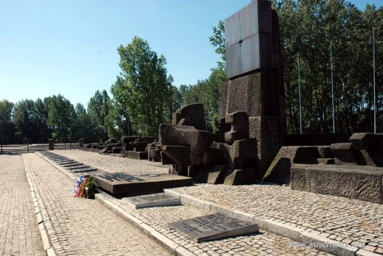
Símbolo de memoria colectiva: El Monumento Internacional a las Víctimas de Auschwitz-Birkenau, ubicado entre las ruinas de los Crematorios II y III, fue inaugurado el 16 de abril de 1967. Diseñado por un equipo internacional liderado por los escultores Pietro Cascella y Giorgio Simoncini, y los arquitectos Jerzy Jarnuszkiewicz y Julian Palka, representa el esfuerzo colectivo por honrar la memoria de todas las víctimas del campo.
Diseño y simbolismo: El monumento consta de una larga pasarela que conduce a un conjunto de bloques y formas abstractas de granito oscuro que evocan lápidas, chimeneas destruidas y vías férreas interrumpidas. Su sobriedad y escala reflejan la magnitud de la tragedia que conmemora, resistiéndose a cualquier intento de estetizar o simplificar el horror del Holocausto.
Las placas conmemorativas: Frente al monumento central hay 23 placas con el mismo texto en diferentes idiomas, representando las nacionalidades de las víctimas. El mensaje, profundamente conmovedor en su simplicidad, dice: "Que este lugar donde los nazis asesinaron a millón y medio de hombres, mujeres y niños, en su mayoría judíos de diversos países de Europa, sea por siempre un grito de desesperación y advertencia para la humanidad."
Un lugar para la reflexión: El monumento marca un punto final físico para la visita a Birkenau, pero representa el comienzo de un proceso de reflexión moral e histórica que debería continuar mucho después de abandonar el lugar. Se ha convertido en un espacio donde visitantes de todo el mundo, independientemente de su origen, pueden reunirse en un momento de silencio compartido.
Normas de comportamiento
La visita al Memorial y Museo Estatal de Auschwitz-Birkenau requiere un comportamiento respetuoso. Este lugar, donde más de un millón de personas fueron asesinadas, debe ser tratado con la máxima consideración.
- Mantenga silencio en áreas especialmente sensibles como las cámaras de gas, los crematorios y la plaza de fusilamientos.
- No consuma alimentos ni bebidas durante el recorrido.
- Fotografía: Está permitido tomar fotografías sin flash en la mayoría de las áreas (excepto donde se indique lo contrario). Evite las poses inapropiadas o selfies que no respeten la dignidad del lugar.
- No toque las exhibiciones ni estructuras del campo, muchas son frágiles y de valor histórico.
- Siga los caminos designados y no se separe de las rutas establecidas.
- Vestimenta apropiada: Use ropa y calzado adecuados, considerando tanto el respeto al lugar como las condiciones climáticas.
Reflexión y memoria
Auschwitz-Birkenau representa no solo el recuerdo de un pasado trágico, sino también una advertencia para el presente y el futuro. Su existencia nos enseña sobre los peligros del odio, el prejuicio y la indiferencia ante la injusticia.
Al visitar este lugar, participamos en un acto de memoria colectiva que honra a las víctimas y nos compromete a construir un mundo más justo y humano. Como dijo Elie Wiesel, sobreviviente de Auschwitz y Premio Nobel de la Paz:
El Memorial Auschwitz-Birkenau no es simplemente un sitio histórico, sino un espacio de reflexión sobre nuestra responsabilidad compartida de defender la dignidad humana y prevenir futuros genocidios.
Que la memoria de las víctimas nos inspire a trabajar por un mundo más justo, donde la tolerancia y el respeto mutuo prevalezcan. Nunca más.
Recursos educativos
Para profundizar en el conocimiento histórico del Holocausto y Auschwitz-Birkenau, recomendamos los siguientes recursos oficiales:
- Sitio oficial del Memorial y Museo Estatal de Auschwitz-Birkenau
- Yad Vashem - Centro Mundial de Conmemoración de la Shoá
- Museo Memorial del Holocausto de Estados Unidos
Estos recursos ofrecen materiales educativos, testimonios de sobrevivientes, documentos históricos y guías pedagógicas para educadores y estudiantes.